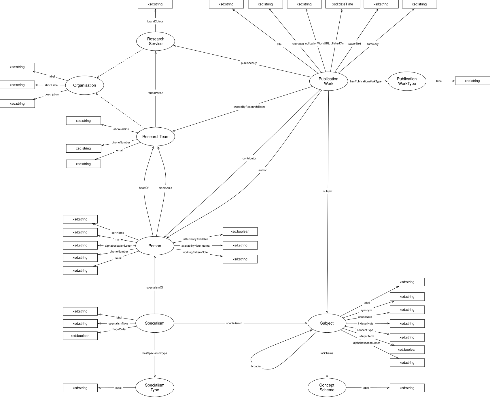

IRI: http://parliament.uk/ontologies/library-knowledge-base/ConceptScheme
IRI: http://parliament.uk/ontologies/library-knowledge-base/Organisation
IRI: http://parliament.uk/ontologies/library-knowledge-base/Person
IRI: http://parliament.uk/ontologies/library-knowledge-base/PublicationWork
IRI: http://parliament.uk/ontologies/library-knowledge-base/PublicationWorkType
IRI: http://parliament.uk/ontologies/library-knowledge-base/ResearchService
IRI: http://parliament.uk/ontologies/library-knowledge-base/ResearchTeam
IRI: http://parliament.uk/ontologies/library-knowledge-base/Specialism
IRI: http://parliament.uk/ontologies/library-knowledge-base/SpecialismType
IRI: http://parliament.uk/ontologies/library-knowledge-base/Subject
IRI: http://parliament.uk/ontologies/library-knowledge-base/author
IRI: http://parliament.uk/ontologies/library-knowledge-base/broader
IRI: http://parliament.uk/ontologies/library-knowledge-base/contributor
IRI: http://parliament.uk/ontologies/library-knowledge-base/formsPartOf
IRI: http://parliament.uk/ontologies/library-knowledge-base/hasPublicationWorkType
IRI: http://parliament.uk/ontologies/library-knowledge-base/hasSpecialismType
IRI: http://parliament.uk/ontologies/library-knowledge-base/headOf
IRI: http://parliament.uk/ontologies/library-knowledge-base/inScheme
IRI: http://parliament.uk/ontologies/library-knowledge-base/memberOf
IRI: http://parliament.uk/ontologies/library-knowledge-base/ownedByResearchTeam
IRI: http://parliament.uk/ontologies/library-knowledge-base/publishedBy
IRI: http://parliament.uk/ontologies/library-knowledge-base/specialismIn
IRI: http://parliament.uk/ontologies/library-knowledge-base/specialismOf
IRI: http://parliament.uk/ontologies/library-knowledge-base/subject
IRI: http://parliament.uk/ontologies/library-knowledge-base/abbreviation
IRI: http://parliament.uk/ontologies/library-knowledge-base/alphabetisationLetter
IRI: http://parliament.uk/ontologies/library-knowledge-base/availabilityNoteInternal
IRI: http://parliament.uk/ontologies/library-knowledge-base/brandColour
IRI: http://parliament.uk/ontologies/library-knowledge-base/conceptType
IRI: http://parliament.uk/ontologies/library-knowledge-base/description
IRI: http://parliament.uk/ontologies/library-knowledge-base/email
IRI: http://parliament.uk/ontologies/library-knowledge-base/indexerNote
IRI: http://parliament.uk/ontologies/library-knowledge-base/isCurrentlyAvailable
IRI: http://parliament.uk/ontologies/library-knowledge-base/isTopicTerm
IRI: http://parliament.uk/ontologies/library-knowledge-base/label
IRI: http://parliament.uk/ontologies/library-knowledge-base/name
IRI: http://parliament.uk/ontologies/library-knowledge-base/phoneNumber
IRI: http://parliament.uk/ontologies/library-knowledge-base/publicationWorkURL
IRI: http://parliament.uk/ontologies/library-knowledge-base/publishedOn
IRI: http://parliament.uk/ontologies/library-knowledge-base/reference
IRI: http://parliament.uk/ontologies/library-knowledge-base/scopeNote
IRI: http://parliament.uk/ontologies/library-knowledge-base/shortLabel
IRI: http://parliament.uk/ontologies/library-knowledge-base/sortName
IRI: http://parliament.uk/ontologies/library-knowledge-base/specialismNote
IRI: http://parliament.uk/ontologies/library-knowledge-base/summary
IRI: http://parliament.uk/ontologies/library-knowledge-base/synonym
IRI: http://parliament.uk/ontologies/library-knowledge-base/teaserText
IRI: http://parliament.uk/ontologies/library-knowledge-base/title
IRI: http://parliament.uk/ontologies/library-knowledge-base/triageOrder
IRI: http://parliament.uk/ontologies/library-knowledge-base/workingPatternNote
This HTML document was obtained by processing the OWL ontology source code through LODE, Live OWL Documentation Environment, developed by Silvio Peroni.